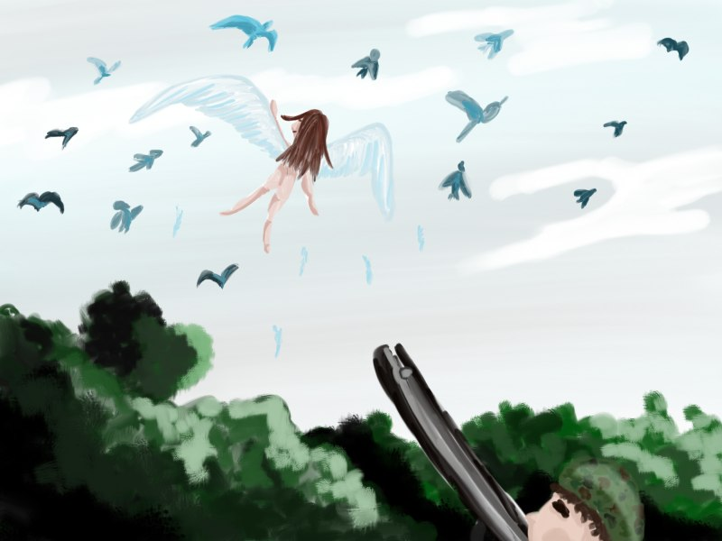

Creacover 2019 : J13
La musique du jour est Fly and Collision of Comas Sola de Tangerine Dream.
Belle découverte. La structure de la mélodie est un peu décousue, cassée. Les "bruits" du début sont agressifs, mais plutôt naturels, comme le chant d’une énorme nuée d’oiseaux. En revanche, les "bruits" de la fin sonnent plutôt urbains et violents. Ils déstructurent le "thème" central apaisant et ressourçant. Il y a comme une avancée dans cette musique :
- d’abord les oiseaux s’envolent
- ils sont ensuite rejoint par autre chose, quelque chose de gracieux et de pur
- leur vol commun progresse jusqu’à un climax onirique et voluptueux
- un élément vient perturber le développement harmonieux de la vie qui se déroule dans la mélodie
Ce déroulement se traduit dans mon image par :
- le vol des oiseaux et de l’ange, enthousiastes et heureux
- l’intervention du chasseur qui vise l’ange avec son fusil
La musique reste en suspens pour nous, tout comme la réponse à cette question : va-t-il la tuer ?

Je crois que c’est la première fois que je réalise un dessin sur Sketchbook sans garder les contours de crayon de l’esquisse. Pour une fois, on comprend quand-même ce qui est représenté.